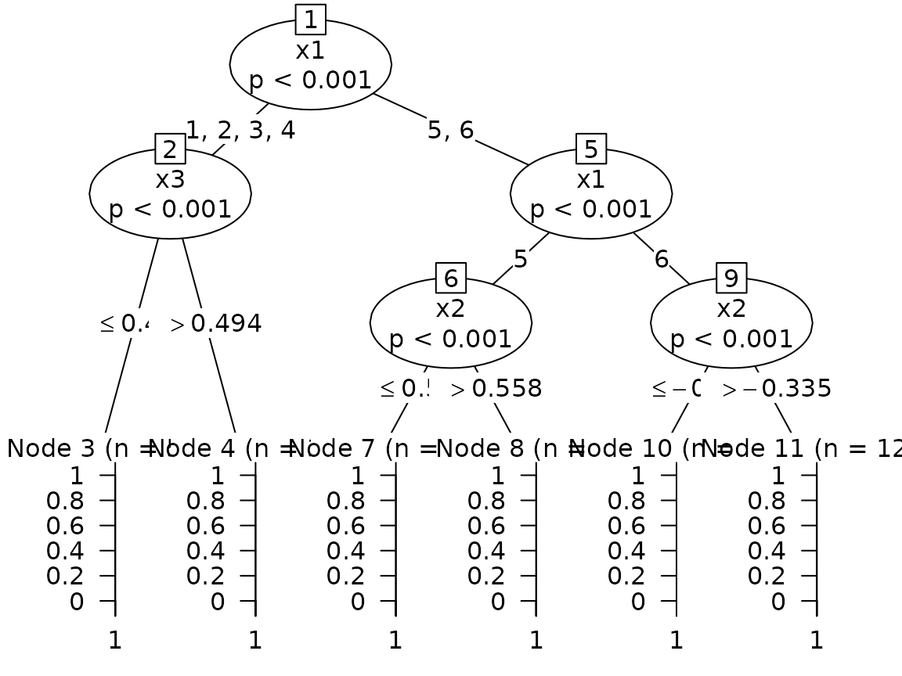

Logistic regression trees with glmtree
Adrien Ehrhardt
2026-10-11
Source:vignettes/glmtree.Rmd
glmtree.RmdA logistic regression tree is a decision tree whose leaves
hold logistic regressions: the tree cuts the population into segments,
and each segment gets its own scoring function. glmtree
searches such a tree with a stochastic EM algorithm where the segment of
each observation is a latent variable (see the manuscript linked in the
README). This vignette shows the interface on the two
simulated settings of generateData(), and compares with a
single logistic regression and with the model-based recursive
partitioning of partykit::glmtree().
When there is a tree: three segments, three regressions
In the "tree" scenario the sign of the effect of
x2 and x3 depends on a categorical feature
x1 (its six levels come in three pairs), so a single
logistic regression is misspecified.
data <- generateData(n = 2000, scenario = "tree")
train <- sample(nrow(data), 1400)
features <- c("x1", "x2", "x3")
fit <- glmtree(
x = data[train, features], y = data$y[train],
K = 5, iterations = 100,
ctree_controls = partykit::ctree_control(alpha = 0.1, minbucket = 80, maxdepth = 4)
)
fit
#> Logistic regression tree fitted by SEM
#> segments: 3 | best iteration: 35 of 100
#> bic of the best tree: -1463 (training set)
#>
#> Model formula:
#> .segment ~ x1 + x2 + x3
#>
#> Fitted party:
#> [1] root
#> | [2] x1 in 1, 2, 3, 4
#> | | [3] x3 <= 0.49388: 3 (n = 583, err = 47.7%)
#> | | [4] x3 > 0.49388: 4 (n = 359, err = 62.1%)
#> | [5] x1 in 5, 6
#> | | [6] x1 in 5
#> | | | [7] x2 <= 0.55806: 5 (n = 151, err = 1.3%)
#> | | | [8] x2 > 0.55806: 5 (n = 85, err = 56.5%)
#> | | [9] x1 in 6
#> | | | [10] x2 <= -0.33494: 5 (n = 96, err = 47.9%)
#> | | | [11] x2 > -0.33494: 5 (n = 126, err = 29.4%)
#>
#> Number of inner nodes: 5
#> Number of terminal nodes: 6predict() gives the probability of the positive class
(or, with type = "segment", the segment) of new
observations; the fitted tree is fit@best.tree$tree (a
partykit object that can be plotted) and the logistic
regression of each segment is in fit@best.tree$glms.
table(true_cluster = data$c[-train], segment = predict(fit, data[-train, features], type = "segment"))
#> segment
#> true_cluster 3 4 5
#> 1 127 68 0
#> 2 130 65 0
#> 3 0 0 210
plot(fit@best.tree$tree)
The evolution of the criterion along the chain (here the BIC, computed on the training set, higher is better) shows when the chain settles; only iterations after the burn-in can be selected.
plot(unlist(fit@performance$criterionEvolution), type = "l", xlab = "Iteration", ylab = "-BIC")
abline(v = fit@performance$best_iteration, lty = 2)We compare the test-set Gini index (2 AUC - 1) with a single logistic
regression and with partykit::glmtree() (model-based
recursive partitioning, MOB), which looks for splits by a parameter
instability test instead of a likelihood-based latent variable.
logit <- glm(y ~ x1 + x2 + x3, data = data[train, ], family = binomial)
mob <- partykit::glmtree(y ~ x2 + x3 | x1 + x2 + x3, data = data[train, ], family = binomial)
c(
logit = normalizedGini(data$y[-train], predict(logit, data[-train, ], type = "response")),
mob = normalizedGini(data$y[-train], predict(mob, data[-train, ], type = "response")),
glmtree = normalizedGini(data$y[-train], predict(fit, data[-train, features]))
)
#> logit mob glmtree
#> 0.1917357 0.6472518 0.6169301When there is no tree: apparent clusters but a single regression
In the "no tree" scenario the features form three
clusters, but y depends on them through one logistic
regression. There is nothing to gain from segmenting, and a good method
should not lose much by trying.
data <- generateData(n = 2000, scenario = "no tree")
train <- sample(nrow(data), 1400)
fit <- glmtree(
x = data[train, c("x1", "x2")], y = data$y[train], K = 5, iterations = 100,
ctree_controls = partykit::ctree_control(alpha = 0.1, minbucket = 80, maxdepth = 4)
)
logit <- glm(y ~ x1 + x2, data = data[train, ], family = binomial)
c(
logit = normalizedGini(data$y[-train], predict(logit, data[-train, ], type = "response")),
glmtree = normalizedGini(data$y[-train], predict(fit, data[-train, c("x1", "x2")]))
)
#> logit glmtree
#> 0.6652462 0.6634425Choosing the best tree
The chain draws many trees. Which one is returned depends on
criterion ("bic", "aic" or
"gini") and on where it is computed:
- by default (
validation = FALSE) the AIC or BIC of the training data is used (each segment pays for its parameters, the BIC of a segment uses the logarithm of its size); - with
validation = TRUEa fractionproportionsof the data is held out and the log-likelihood (no penalty is needed) or the Gini index is computed there at each iteration; - with
test = TRUEanother fraction is held out, never used for selection, on which the criterion of the best tree is reported infit@performance$performance;proportions = c(test, validation)when both are used.
burn_in is the number of first iterations that cannot be
selected, and patience stops the chain when the criterion
has not improved for that many iterations.
Comparison with a clustering of the features
A popular alternative is to cluster the observations on their
features (for instance on the first principal components) and fit one
regression per cluster. This only helps when the clusters of the
features are related to the heterogeneity of the response, which is not
the case in the "tree" scenario: the response depends on
the segment through x1, which a PCA of the features does
not isolate.
data <- generateData(n = 2000, scenario = "tree")
train <- sample(nrow(data), 1400)
mixed <- FactoMineR::FAMD(data[train, features], graph = FALSE)
cluster <- function(newdata) stats::predict(mixed, newdata)$coord[, "Dim 1"] < 0
segment <- cluster(data[, features])
pred <- numeric(nrow(data))
for (j in c(TRUE, FALSE)) {
model <- glm(y ~ x1 + x2 + x3, data = data[train, ][segment[train] == j, ], family = binomial)
pred[segment == j] <- predict(model, data[segment == j, ], type = "response")
}
normalizedGini(data$y[-train], pred[-train])
#> [1] 0.4744621